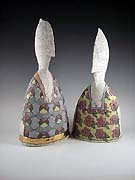
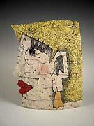
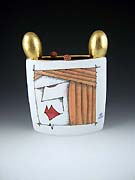
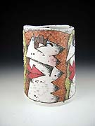
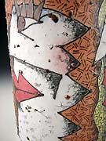
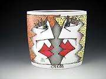
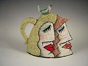
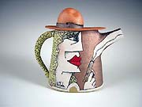

|
Rimas VisGirda
American ceramist.

Rimas VisGirda is a Lithuanian-born American ceramist and teacher.
He was awarded a BA in physics in 1966 and an MA in art in 1971,
both from California State University, Sacramento. He also earned
an MFA from Washington State University in 1973. He has taugh at
various institutions in the USA, including at Illinois Weseley University
from 1987–97.

VisGirda’s work is wheel-thrown and hand-built, with a characteristic
surface decoration in engobes, decals and overglazes depicting socio-critical
caricature. VisGirda cites as his influences US California underground
cartoonists such as Robert Crumb and S. Clay Wilson and the British
Punk movement. His wife Billie Jean Theide is also an artist, working
in metal and clay.

Artist's Statement:
My work is influenced by the culture I live in, the machine age,
the urban environment, the media, and fad and fashion. One of my
fundamental beliefs is that experience affects everything one does;
sometimes immediately and sometimes not until years later. In 1981
visited the Soviet Union as a guest of the USSR Union of Artists
and have been to a number of symposia in Eastern Europe during the
ensuing years. I find that humanity and the human condition have
also entered my work as a result of those experces. In the past
I acted as an observer; now I feel more like a parienticipant.

Rimas VisGirda is represented by Solomon
Dubnick Gallery.
More Artists of the Week
More Articles
|
{kind=link}
{kind=link}
{kind=link}
{kind=link}
{kind=link}
{kind=link}
{kind=link}
{kind=link}